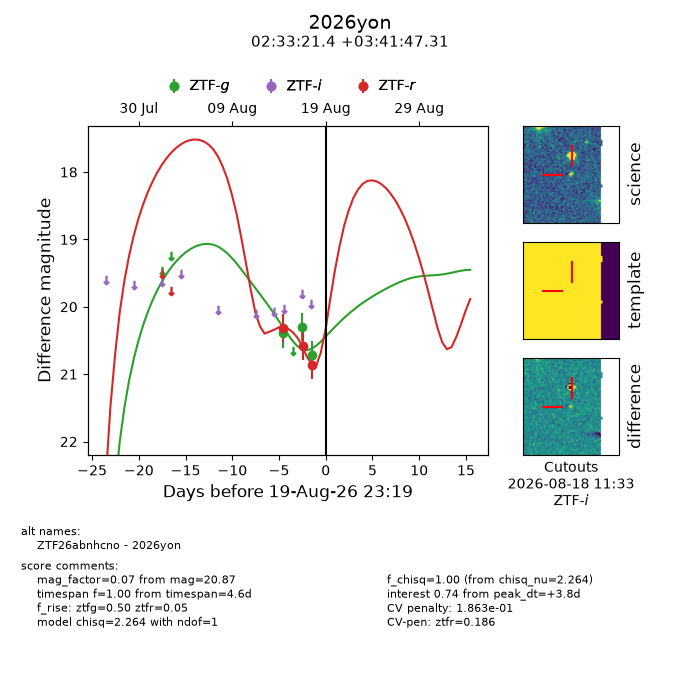
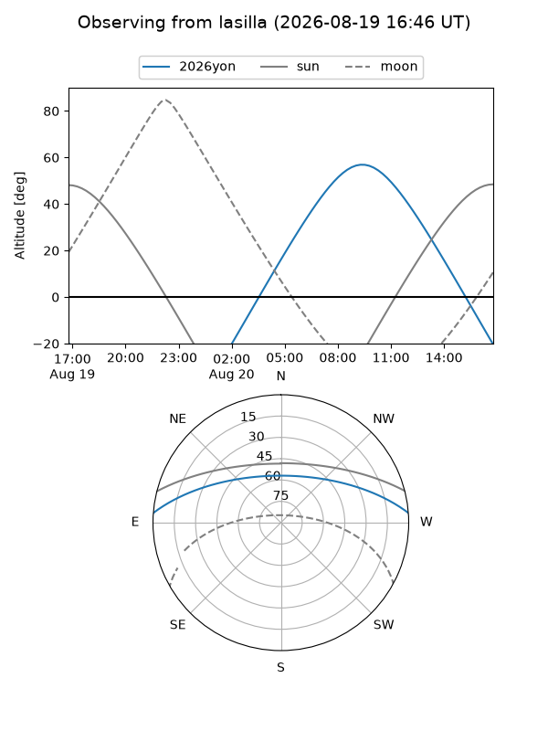
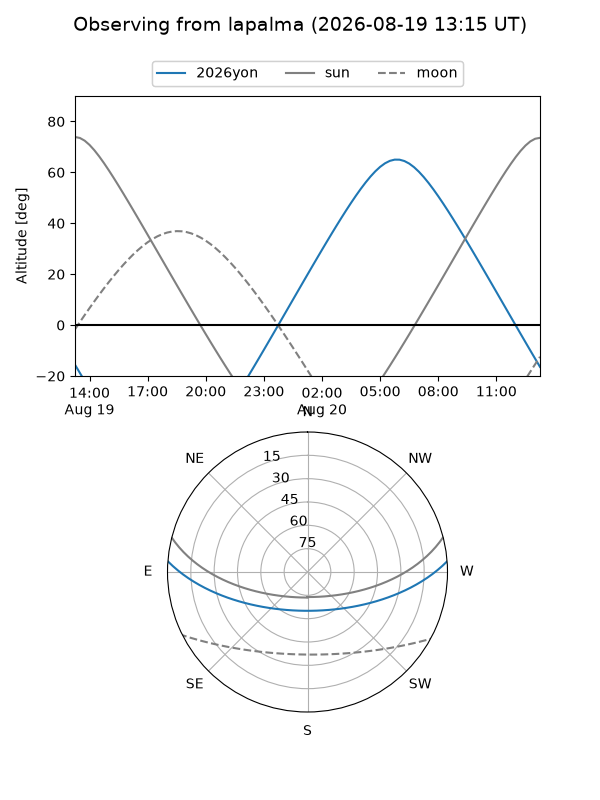
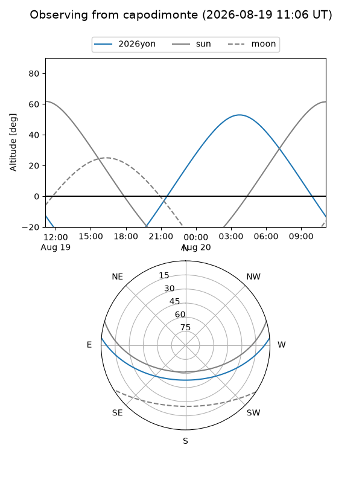
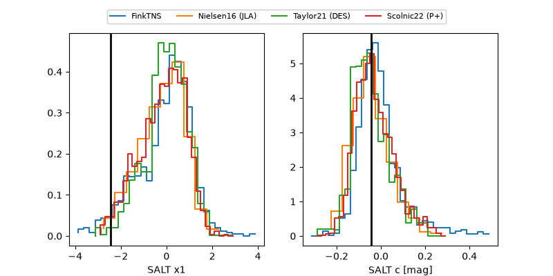

2026yon
Target 2026yon at 2026-08-20 11:20
Aliases and brokers:
FINK-ZTF: ztf.fink-portal.org/ZTF26abnhcno
Lasair-ZTF: lasair-ztf.lsst.ac.uk/objects/ZTF26abnhcno
ALeRCE-ZTF: alerce.online/object/ZTF26abnhcno
YSE-PZ: ziggy.ucolick.org/yse/transient_detail/2026yon
TNS name: wis-tns.org/object/2026yon
Direct TNS query: direct search
alt names
ZTF26abnhcno (ztf,fink_ztf)
2026yon (tns,yse)
Coordinates:
equatorial (ra, dec) = 38.3390,+3.69647
equatorial (HMS+DMS) = 02:33:21.36,+03:41:47.31
galactic (l, b) = (165.4524,-50.56610)
Flags:
TNS type: nan
peak dt: +4.3
likely cv: !!
Photometry:
last ztfg=20.71, ztfr=20.87
3 ztfg, 3 ztfr detections
Lightcurve

Visibility



Additional plots
